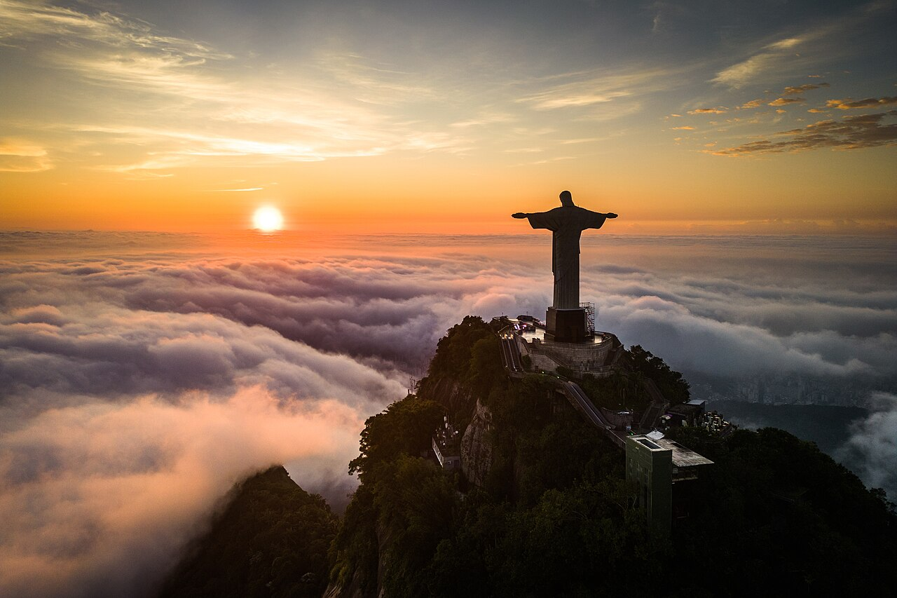
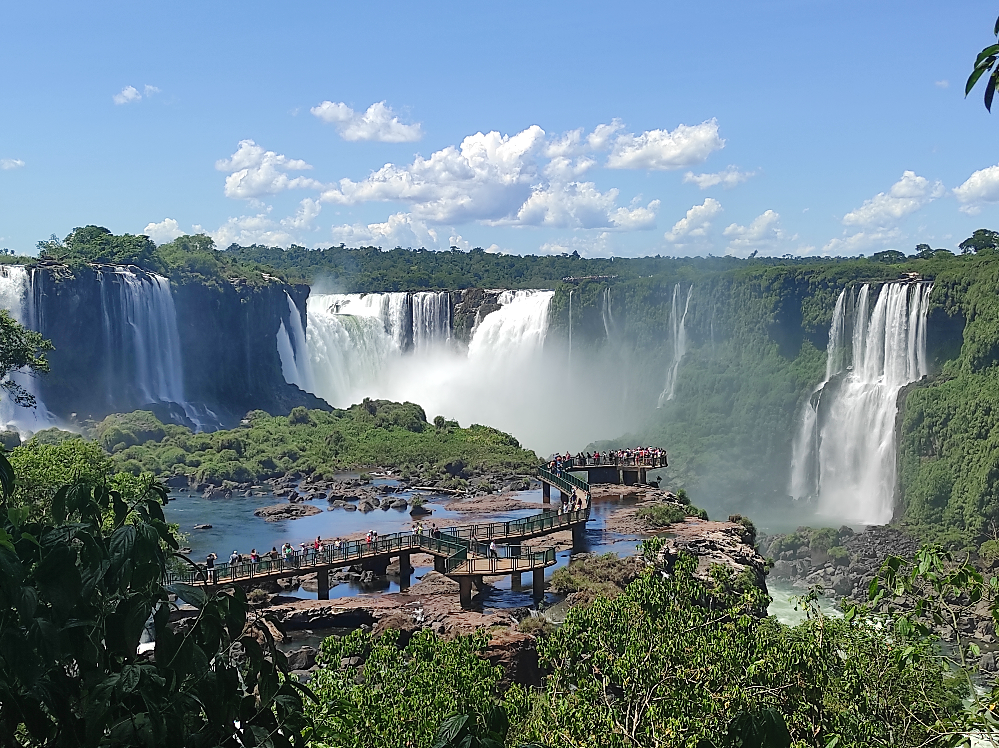
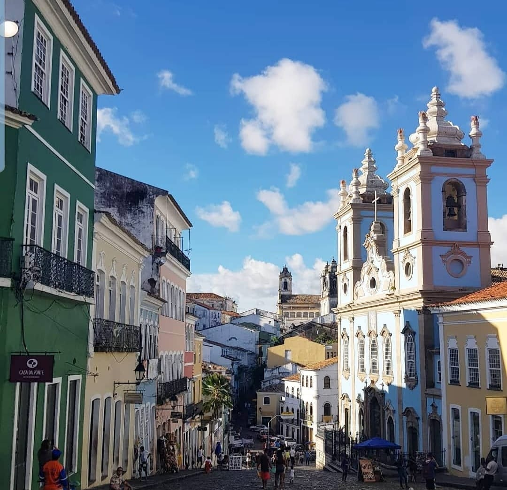
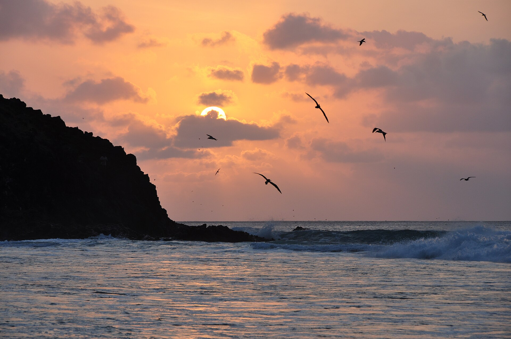
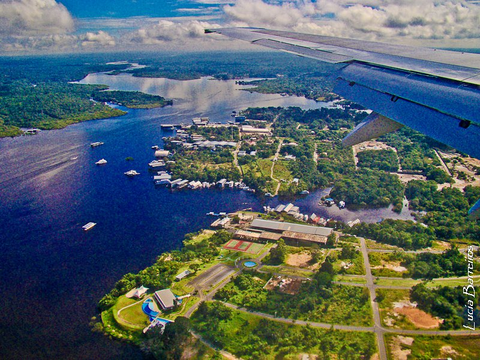
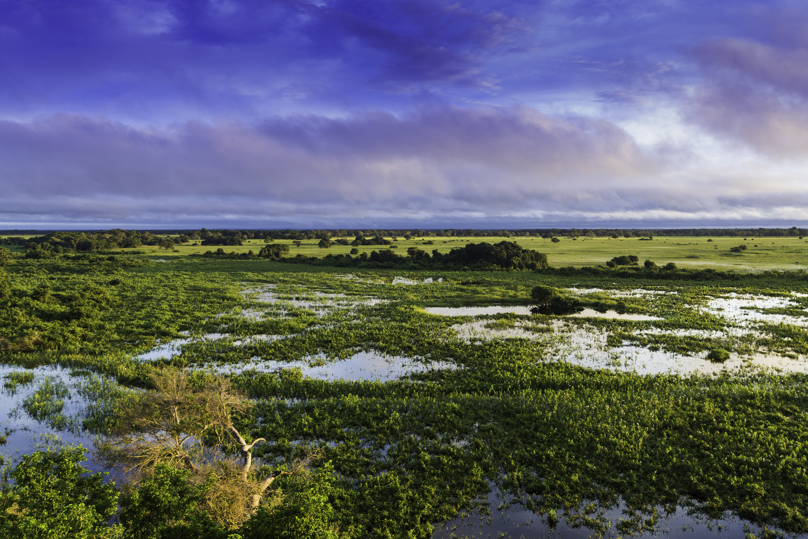

Brasil — Pontos Turísticos
Galeria de fotos do Brasil
Seis das diversas experiências maravilhosas das quais você pode experimentar!

Cristo Redentor — Rio de Janeiro
Um dos símbolos do Brasil! Vista panorâmica e maravilhosa da cidade.

Cataratas do Iguaçu — Paraná
Patrimônio Mundial! Mais de 270 quedas d'água em meio à floresta tropical.

Pelourinho — Salvador
Centro histórico com cores, música, dança e cultura afro-brasileira!

Fernando de Noronha — Pernambuco
Paraíso de águas azuis, praias desertas e vida marinha exuberante!

Floresta Amazônica — Manaus
A maior floresta do mundo! Biodiversidade única e rios gigantes.

Pantanal — Mato Grosso
Melhor lugar do mundo para ver animais selvagens! Jacarés, araras e onças.